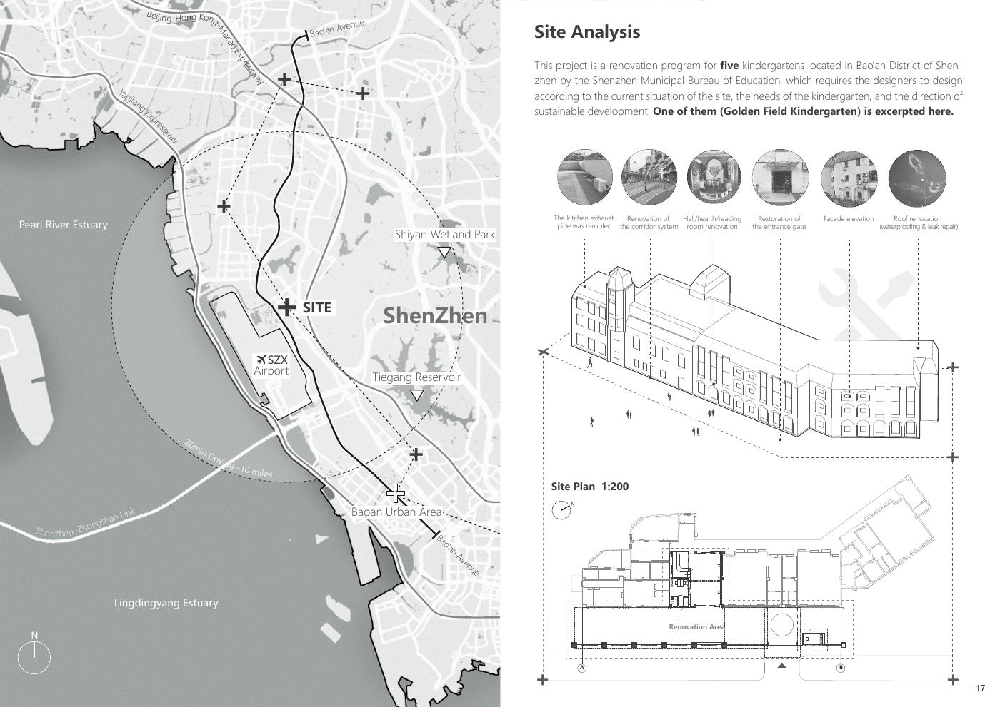
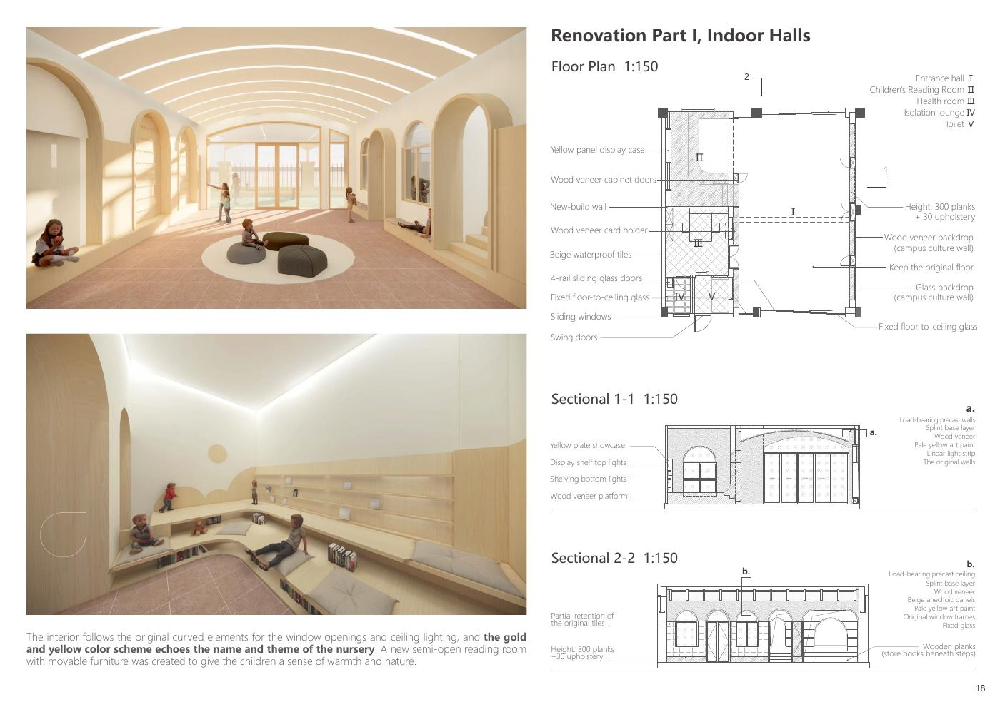
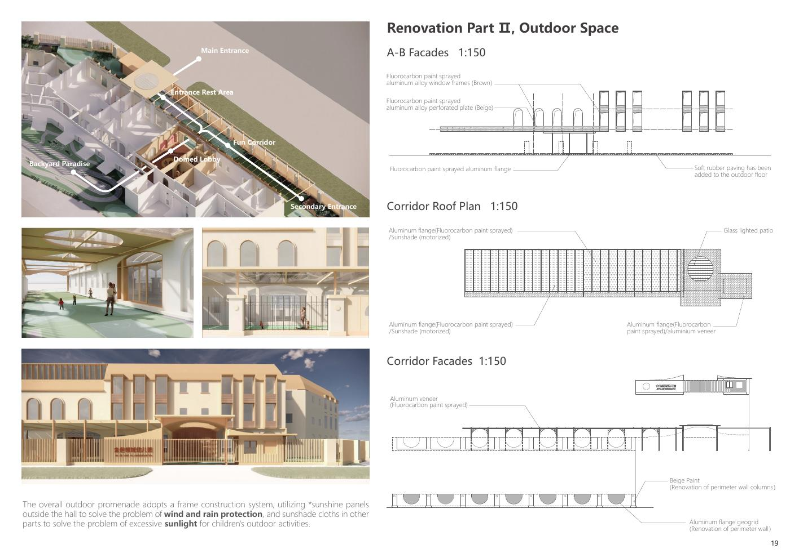

实习项目 / 聚境设计
幼儿园空间与视觉系统更新
围绕场地问题与使用需求，参与从调研、草模与方案设计到施工沟通和交付后的反馈跟进。

我的工作范围
在团队项目中，我参与了从前期需求梳理到落地后反馈跟进的过程。下面区分我负责的设计工作与参与的协作环节。
- 设计工作
- 草模设计、方案设计与建模。
- 研究与沟通
- 前期调研、场地问题与需求沟通、资料总结。
- 深化与落地
- 视觉系统更新、施工团队沟通与交付。
- 后续跟进
- 落地后的使用反馈整理与跟进。
01 · 调研与需求梳理
项目位于深圳宝安，我参与金色领域与西岸华府两所幼儿园的改造，本页主要展示金色领域方案。作品集将现状问题分为连廊、门厅与阅读空间、入口、立面和屋面等部分。
调研与沟通需要同时考虑既有建筑条件和使用需求：例如户外活动的过强日照、风雨防护，以及室内功能与空间的调整。

02 · 草模、方案与视觉表达
通过草模、方案设计与建模，将需求转化为空间方案，支持团队讨论与方案调整。参与项目视觉系统更新，推进相关设计与表达。
室内方案延续原有曲线元素，以半开放阅读空间和可移动家具组织活动；室外连廊方案回应遮阳与防雨需求。以下图页展示团队方案，个人职责以本页工作范围为准。


03 · 施工沟通与交付
与施工团队沟通设计方案和现场问题，协助推进方案落实与交付。这里重点呈现我在设计表达与落地协作之间承担的工作。
04 · 落地后的反馈
项目落地后跟进实际使用反馈，整理出现的问题，并参与后续沟通与跟进。
作品集记载项目于 2024 年 7 月开工，分阶段实施，第一阶段立面与连廊改造于 9 月完成；10 月回访中记录了卫生间布局与室内照明强度等意见，作为后续阶段参考。这是团队项目进展与回访记录，不代表本人全程承担施工，也不等同于量化体验改善。

视觉系统更新的具体材料、个人方案修改过程及反馈记录原件仍待补充。
这段实践体现的能力
完整建筑设计成果将归入建筑作品集。本页聚焦个人职责、设计判断与协作过程。